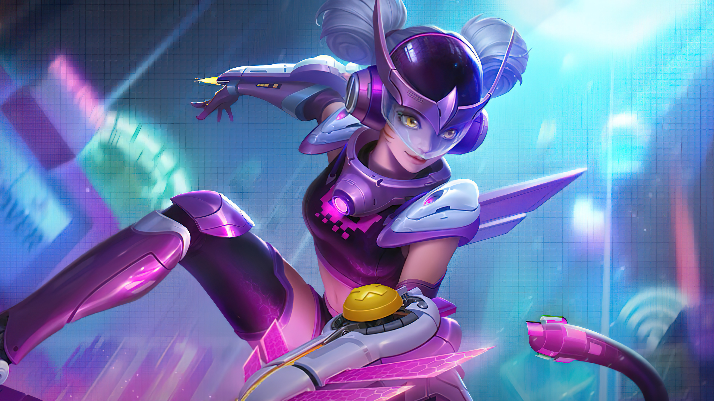

Skin Collector is the newest caste skin in Mobile Legends.
You can get this skin through the Epic Showcase and Grand Collector events.
his is a list of all skin collectors in Mobile Legends (MLBB) 2020-2021.
Esportsku this time will provide a flat row of all Collector skins in the Mobile Legends game,
both released and in the future. For information, please see the following.
Collector Skins
Have exclusive backgrounds with their entrance animation and
they modified each skill effect on battlefield without tinting the existing skill effects.
Badang-Fist of Zen
The Fist of Zen
At the first Epic Showcase event,
Moonton released the Badang hero skin with the name Fist of Zen,
this skin featured the Badang hero with a very super badass appearance.
Badang has an all-gold armor with a very strong appearance.
Pharsa-Empress Phoenix
The Empress Phoenix
Pharsa itself is a hero mage that is quite widely played and very popular
as a Meta support at that time.
This is what makes Moonton release a Collector skin for the hero Pharsa.
Granger-Agent Z
The Agent Z
This Granger skin has a look that is quite similar to
the Epic Limited heroes Lesley, Kimmy, to Irithel.
Granger looks like a space soldier in a very very cool costume.
Yi Sun Shin-Lone Destructor
The Lone Destructor
Yi Sun Shin is a marksman hero who until now has become a favorite in the Mobile Legends game.
A cool look,good gameplay and tough as a hypercarry make this one hero a lot of favourites.
Valir-Demon Lord
The Demon Lord
Valir Demon Lord is the last skin to be released at the Epic Showcase event.
For the next month, it will start with the Grand Collector event which starts with Wanwan’s skin
hero named Pixel Blast.Currently this skin is still an Epic skin.
Jawhead-Samurai Mech
The Samurai Mech
Jawhead is the most favorite hero so this hero is the best choice released
for the Epic Showcase skin in December 2020.
Currently, Skin Samurai Mech is Jawhead’s best skin.
Wanwan-Pixel Blast
The Pixel Blast

Moonton’s first Grand Collector presents Wanwan’s hero skin with the name Pixel Blast.
This skin can be said to be very cool,Wanwan is a Korean idol group
and also has very good animation.
Gusion-Night Owl
The Night Owl
Night Owl is the second favorite skin after Gusion’s Legends skin,
you could say this Collector skin is an alternative for those of you who really can’t get Gusion’s
Legends skin and it’s still enough to get a Collector skin.
Angela-Floral Elf
The Floral Elf
Angela is a support hero who became popular with the presence of this skin.
Currently you can still get Angela’s skin at
the Grand Collector event in March 2021 in Mobile Legends.
Yu Zhong-Blood Serpent
The Blood Serpent
Having the name Blood Serpent, you can get this skin through the Grand Collector event,
of course at a fairly high price.Do it raw at the event and you will succeed in getting this cool skin.
Ling-Serene Plume
The Serene Plume
For the Collector skin in June 2021, the skin was given to the hero Ling with the skin name Serene Plume.
One of the best skins, Ling looks very cool with the outfits used and the animation skills.
Ling himself is a very strong hero with his mobility abilities,
this one hero is famous for his speed in attacking and has high damage.
Nana-Aqua Pura
The Aqua Pura
In this skin, she swaps out her signature pink outfit for a magical blue garb that radiates ocean vibes.
Replacing her trusty boomerang, Nana now wields a massive throwing star
that has ice on the tip of its blades.
Benedetta-Death Oath
The Death Oath
Of course, Benedetta herself is a very meta hero,
this hero is often played with various roles, ranging from offlaner, core, to support.
His ability to move quickly makes Benedetta worth anticipating so it’s not surprising
that this hero gets a Collector skin.